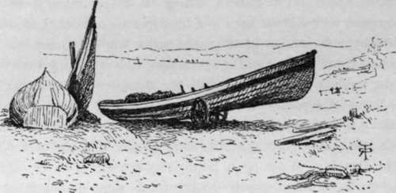
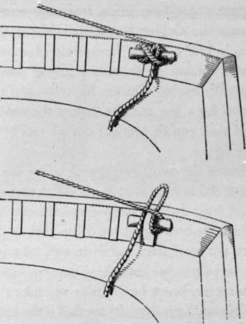
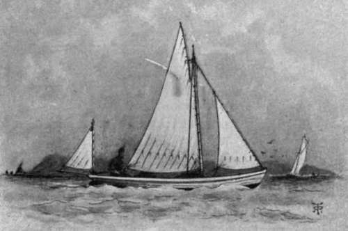

Chapter VII. Sea Fishing From Small Boats
Description
This section is from the book "Sea Fishing", by John Bickerdyke. Also available from Amazon: Sea Fishing.
Chapter VII. Sea Fishing From Small Boats
In the pages of ' Punch ' the inimitable John Leech once drew a happy sketch of a very unhappy cockney sportsman— middle-aged and corpulent, sitting in a very small boat in company with a stout man in a blue jersey—at least, I assume the blueness—and a black glazed straw hat. Extreme woe is depicted on the face of the sportsman, who is leaning over the side, holding a hand line, while the mariner in attendance is cheerful of aspect. ' Don't yer feel anything yet, sir ?' he is asking ; ' perhaps you had better try another worm.' There is a good sailing breeze abroad and a little bobble of a sea. The sketch is so strong it hardly requires words to elucidate it. It is, without much doubt, these same uncontrollable feelings—and I am not alluding to the pull of the fish on the line—which deter so many from taking their pleasure on the sea. My own pet aversion is a steamboat with a screw propeller ; but seafaring persons do say that nothing is more trying to the feelings, let me call them, than a few hours at anchor in a very small boat when there is a lively lop on.
Many an enthusiast, full of hope, has pushed off from the beach, where tiny wavelets were breaking, on to what appeared to be (from the shore) a smiling, rippling blue sea, only to come home an hour or two later yellow of visage, and in a state of collapse. It is unfortunate, and I lament that I can suggest no remedy. Those who suffer, if their inward parts cannot be tutored by practice, would be well advised to stick to harbours and landlocked waters generally. As I have said in an earlier chapter, if they choose to journey to the north-west coast of Scotland, or certain portions of the Irish coast, or to the fjords of Norway, they will find water as calm as any millpond. Few indeed are the days when on the South or West coasts of England there is not some slight upheaval of the water—and the rest.
With regard to the choice of a boat, the sea angler must necessarily take what he can get ; but if there is much variety let him select a craft which is somewhat beamy and seaworthy, rather than narrow and cranky. Wherever there is a harbour the boats will, as a rule, be more stable than those which have to be beached. On portions of the East coast, where the shores are very flat and sandy, a peculiar kind of boat, called a cobble, is used. This is a composite arrangement of fine lines in the bows and fairly deep in the water. But towards the square stern, where the single deep keel is replaced by three smaller ones, the bottom flattens out. Though these boats are not over-safe when running in a big sea, they do most excellently meet the peculiar requirements of a flat sandy shore.
Yorkshire Cobbles.
They are always backed in, and the surf breaks harmlessly against the sharp bows, while the flat stern slips over the sand through the shallow water until it is brought within reach of the hauling rope.
On Deal beach, which has a tremendous slant, very seaworthy little vessels may be seen. Though these have but small keels, they are of fairly deep draught, for the water is deep close along shore. It is quite a sensation to get into a Deal lugger or galley-punt some forty yards from the water, and be sent spinning down the sloping beach, striking the sea with a bang, and taking in half a dozen bucketfuls of water. But it is still more exciting coming on shore in a gale of wind, for the Deal boats are usually hauled up stern foremost, and lie broadside on to the waves for a few minutes before the winch can be set to work and they can be brought out of reach of the waves.
Points which the hirer of the boat should look to are good oars ; a good anchor, or, if the bottom is rocky, a killick stone ; a sufficiency of cable—at least half as many more fathoms as the greatest depth at which the boat may have to be anchored ; and thole-pins which are not more than half worn out. Longshoremen are apt to be very careless about these matters, often letting a thole-pin, for instance, break before they will take the trouble to renew it. Of course, I need hardly say that if the boat is a small sailing vessel, the better the condition of the rigging and cordage generally, the safer she will be in case it comes on to blow. Above all things, in small craft generally, and particularly in boats without ballast, never allow the boatman to make the sheet fast. Many a man has been drowned who has neglected the simple precaution of holding the sheet in his hand. Along high rocky coasts, which is just the place where much of the best fishing is obtained, squalls come down and lay the boat over in an instant. On the open sea a puff can generally be seen coming, by the darkening of the water to windward. Even when the sheet is made fast, as may be done with a certain amount of safety in summer weather away from the high lands, the rope should be secured in such a way that a mere pull will release it, as, for instance, according to one of the methods shown in the accompanying diagram.
It is not easy to say which kind of rig is best for a small fishing boat. On the whole, I am inclined to favour a balance lug with a small foresail and a small mizzen. A mizzen is certainly in the way when whiffing, but in the event of bad weather coming on, or when it is desirable to sail slowly for fishing purposes, it is very convenient to lower the lug, and sail under the mizzen and the small foresail only. Spritsails I do not much like, as the sprit has a nasty way of slipping out of position and suddenly plunging through the bottom of the boat. A cutter rig is certainly not suitable for very small boats, for the boom is in the way. The Tenby boats, fitted with a shifting lug, sail closer to the wind than any vessels I ever handled, except a Norfolk wherry ; but the lowering of the big lug when putting about is a great nuisance, and if badly steered they may be taken aback and capsized. On the whole, perhaps the most handy form of mainsail, and one that can be used with or without jib and mizzen, is the comparatively modern sliding gunter. A sketch of it is given below. It sets almost like a cutter's mainsail, without requiring peak halyards, nor is a boom necessary in a small boat.
Two Methods Of Making The Sheet Fast.
A Handy Fishing Boat.
Continue to:
Tags
fishing, hooks, bait, fishermen, spanish mackerel, mackerel fishing